Gallery
A series of 2D strange attractors I recently created while playing around with some code. The quadratic map used to generate the attractors from random coefficients is defined as: $$ \begin{aligned} x_n &= a_0 + a_1 x_{n-1} + a_2 x_{n-1}^2 + a_3 x_{n-1} y_{n-1} + a_4 y_{n-1} + a_5 y_{n-1}^2,\\[6pt] y_n &= b_0 + b_1 x_{n-1} + b_2 x_{n-1}^2 + b_3 x_{n-1} y_{n-1} + b_4 y_{n-1} + b_5 y_{n-1}^2. \end{aligned} $$
Colors are interpolated using a histogram of the density of points per pixel, through the use of matplotlib colormaps. You can find the code in the strange attractors repository.

 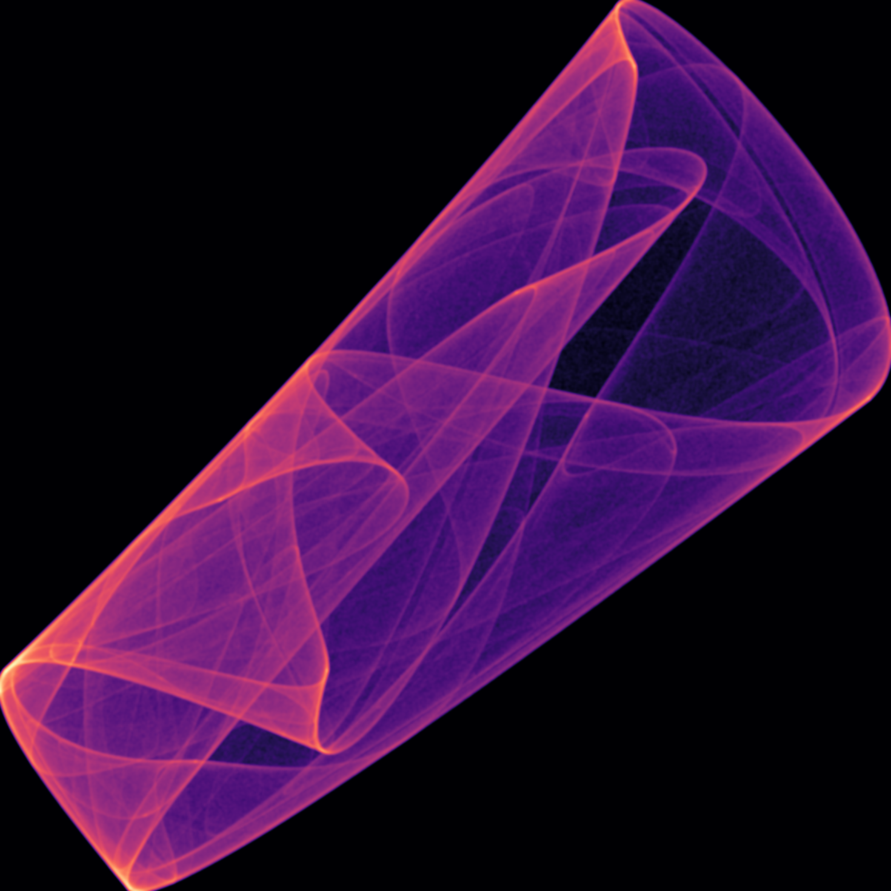
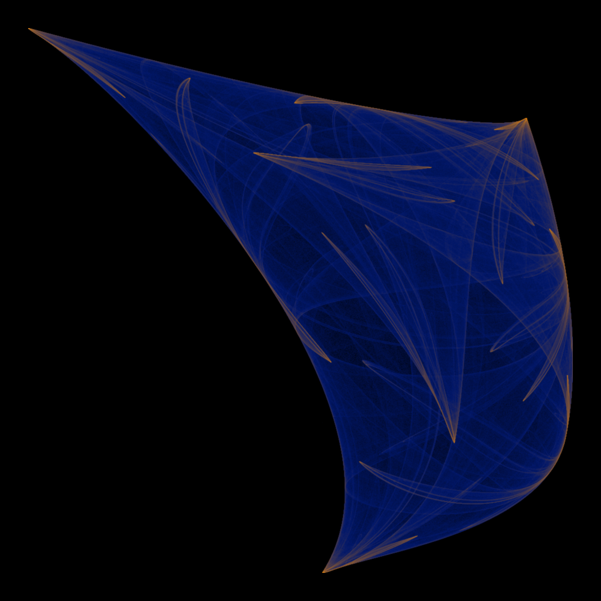
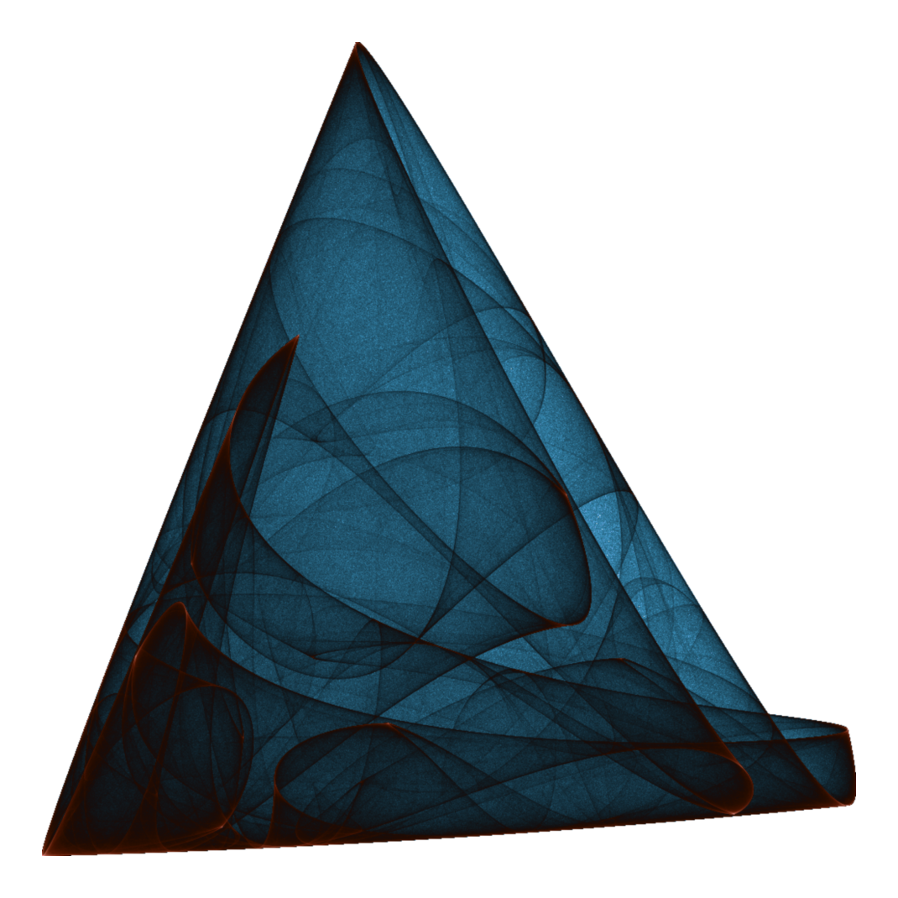
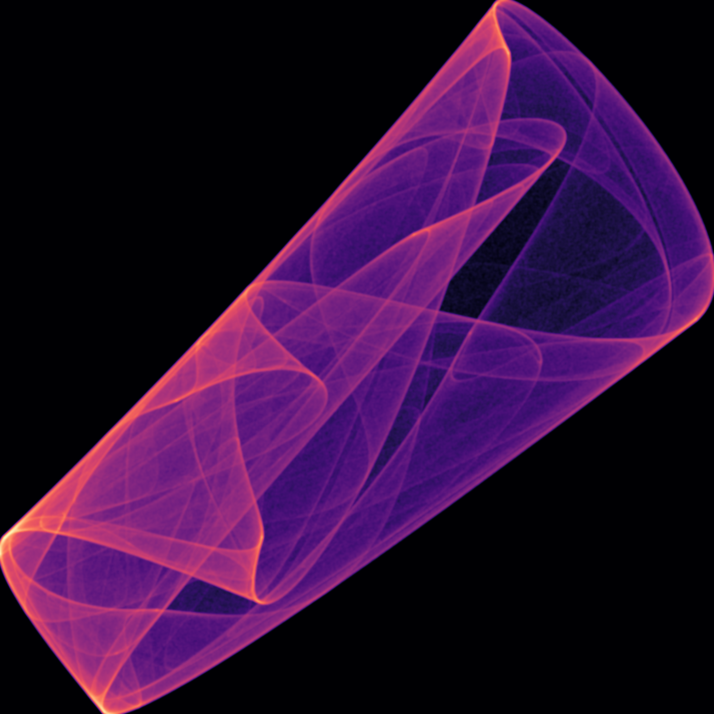
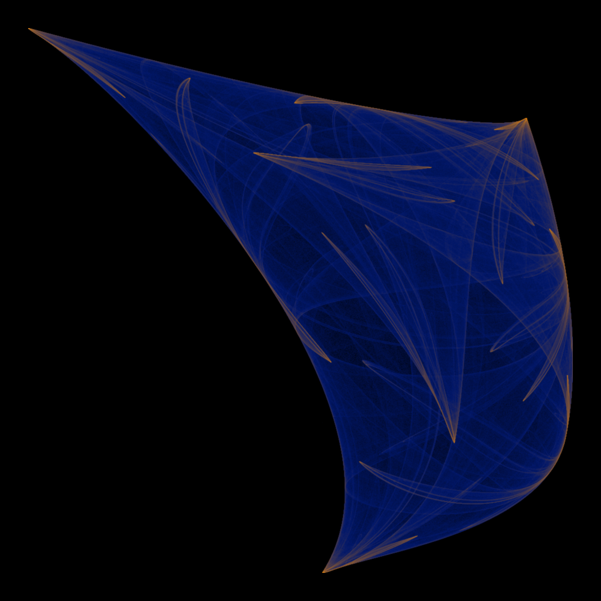
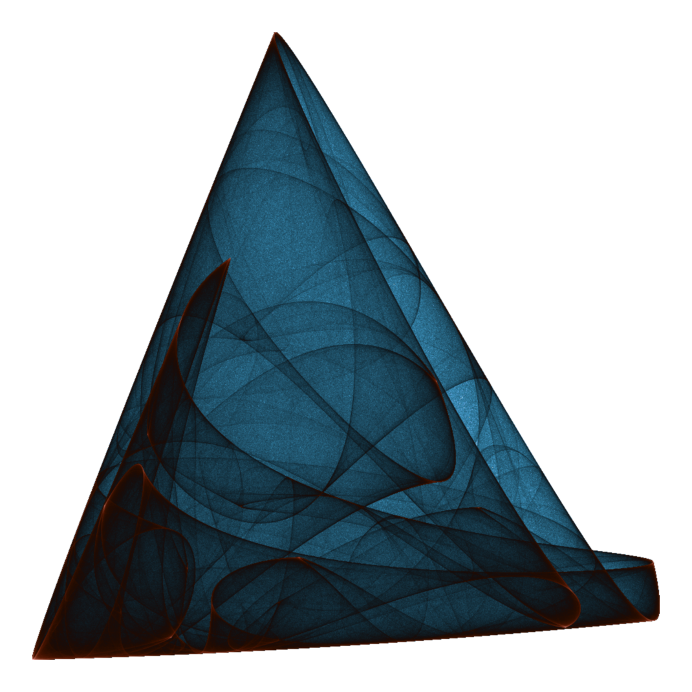
 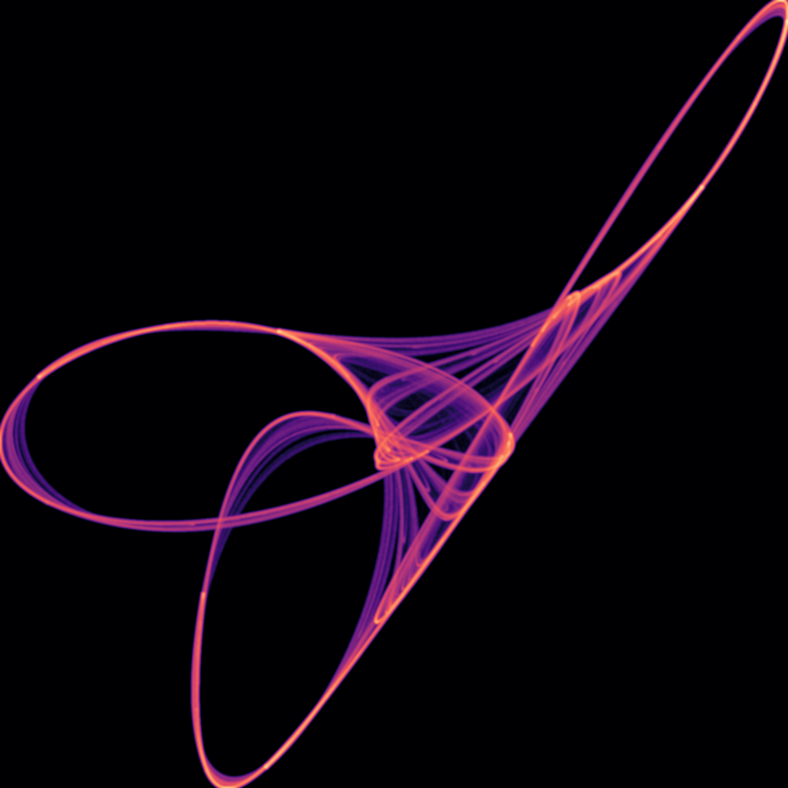
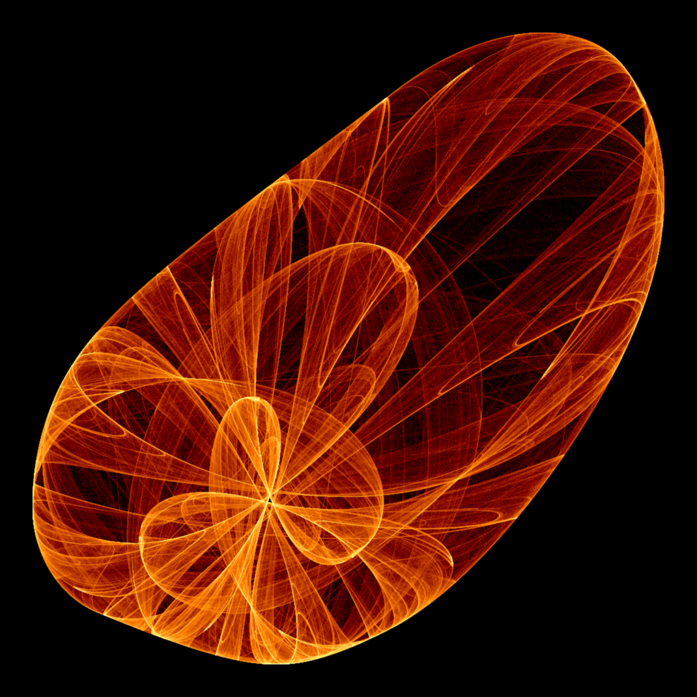
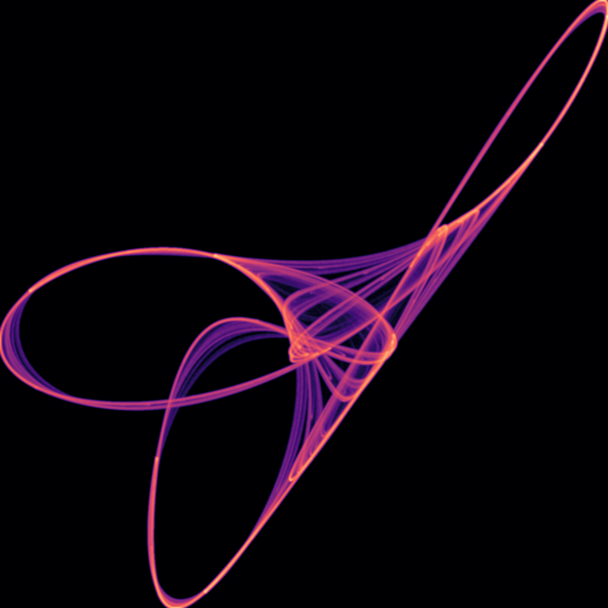
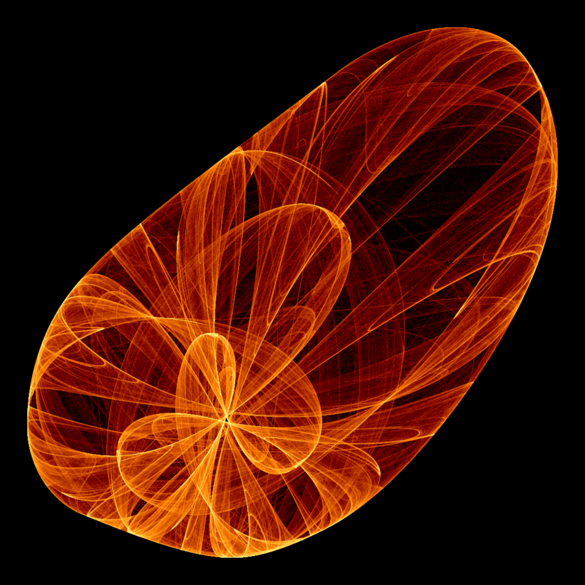

A cool Evangelion gif from episode 26
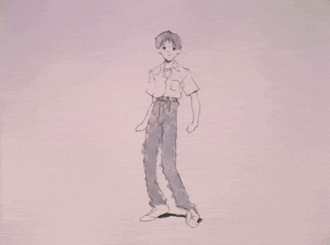